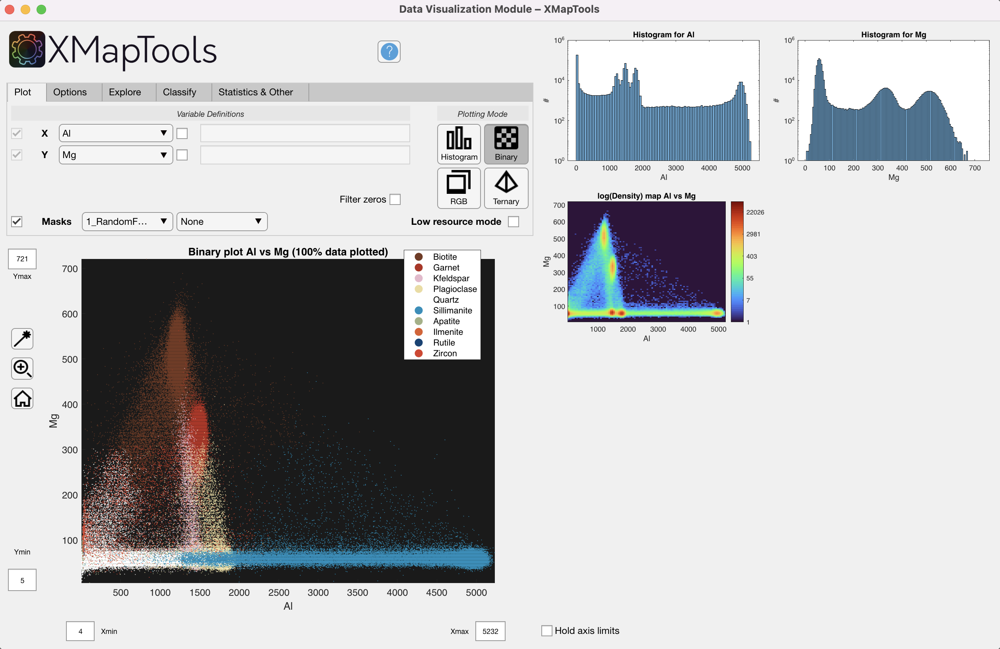

Help file version 09.05.2025 by M. Tedeschi & P. Lanari
Table of content
Visualisation modes: histogram, binary, RGB and ternary
Variable definition
Data sampling (Explore section)
Options
This help file contains a description of the Data Visualisation module, which can be used to display map data in histograms, binary plots, ternary plots and as an RGB composite image.
The Data Visualisation module has access to the data selected in the primary menu of XMapTools when it is opened. To change the type of data, close the module and re-open it after selecting different data.
The type of plot to be generated can be selected in the Plot section. The following modes are available:
By default, XMapTools generates a binary diagram when the module is opened if at least two variables (maps) are available.

Figure 1: Data Visualisation Module, mode histogram.
Figure 2: Data Visualisation Module, mode binary.

Figure 3: Data Visualisation Module, mode RGB.
Figure 4: Data Visualisation Module, mode Ternary.
On the left hand side of the Plot section you can select the maps to be displayed. These can be elements, groups of elements or any other variable (e.g. structural formula)
.
Figure 5: Variable definition.
Whatever the plot type, variables are selected in Variable Definitions, either using the drop-down menus listing all the available maps, or using any combination of them.
Standard MATLAB code format is used to combine existing maps and create new variables to plot. Use an arithmetic operation defined by the rules of linear algebra or array arithmetic. The operation can include spaces between variables, digits, and operators. Array operators (with the dot character ".") must be used when maps are divided or multiplied by each other. Note that element-wise multiplication or division should use ".*" or "./" to multiply or divide the two arrays element by element.

Figure 6: Variable definition using code.
A basic pixel identification tool is only available for binary and ternary maps. Use it to create polygons that identify the location of points on the map.
When a polygon is drawn, the pixel locations of all points within the region of interest are displayed on the map at the bottom right. The shape can be edited and the plot updated accordingly. An identical polygon is plotted on the density map when low resource mode is off.
The Polygon  button activates a cross cursor and you can select vertices of a polygon around any region of interest in the main plot. Right-click to close the polygon.
button activates a cross cursor and you can select vertices of a polygon around any region of interest in the main plot. Right-click to close the polygon.
It is possible to create a polygon by clicking on the button to activate the cursor. The distribution on the map (on the right) is automatically updated.
The selection can be saved as a maske file.
Figure 8: Data Visualisation Module, Identify pixels using a polygonal selection in a binary plot.
Box and drop down menu Masks
Selecting the Masks check box will colour the data displayed in the binary or ternary plots according to the mask file displayed in the drop down menu.

Figure 9: Intensity data colored according to minerals retrieved from the selected mask file.
This mode is optimal for computers with limited memory and is enabled by default when the Data Visualisation module is opened. When this mode is activated, only 40% of the data is plotted (random selection).
The "Bulk Value" (Average) is calculated from the data plotted in the figure, e.g. 20% when Low Resource Mode is enabled. There is no density correction applied, so deviations from the true bulk composition are expected if phases have different densities.
Statistics are reported in the Statistics section and are updated each time the plot is changed.
The statistics section can contain the following information:
The plotting report section can contain the following information:
Plotting binary data [low ressource mode: ON] Size of dataset: 687718 data points (20% plotted)Extracting & Plotting data: 0.10176sAdjusting plot; force plotting: 0.089678sCalculating and plotting the density map : 0.34156sFinal update of plots & interface : 0.00819sDrawnow : 0.073919s